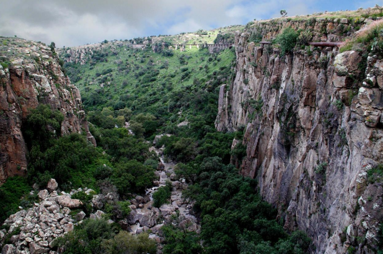
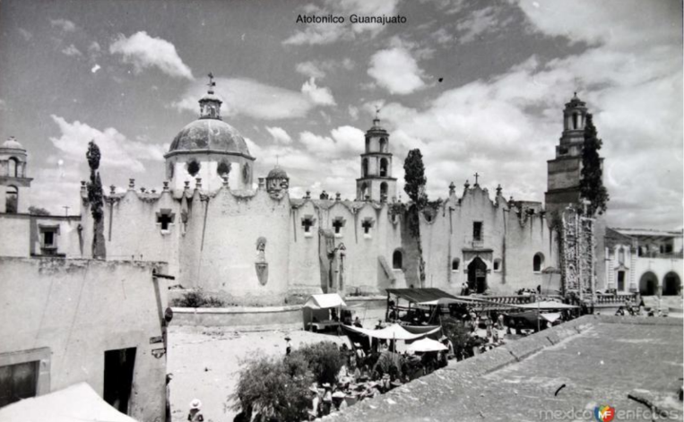

Letter from San Miguel de Allende, Part II: Our April 2026 Trip

Trip to San Miguel de Allende, April 16–30, 2026
We spent two weeks in an Airbnb in the Centro Histórico of San Miguel — the first week with our 3.5-year-old granddaughter and her parents, and the second week recuperating from the first week (just kidding).
To get to San Miguel from the USA, we flew three hours nonstop from Atlanta to Querétaro Airport (QRO), and arranged for a driver to pick us up and drive the 1.5 hours to San Miguel. The other international airport near San Miguel is León (BJX). Many travelers arrange transportation between the airports of Querétaro and León and the city of San Miguel with Bajiogo: bajiogo.com/en.
The city of San Miguel has a population of around 60,000. The city consists of the Centro Histórico, also known as the Zona Centro, and the surrounding colonias (neighborhoods). The municipality of San Miguel, which includes smaller communities around the city proper, has a total population of 112,000. Around 18,000 expatriates live in San Miguel, especially Americans and Canadians.
San Miguel is built on the west side of a ridge and spills down onto the plain below. The historic center is located on a low hill below the ridge. Residential development has taken place on the steep side of the ridge above the historic center, in the neighborhoods of Atascadero and the appropriately named Balcones (Balconies), and a combination of residential and commercial development has spread out on the flat plain below the historic center in the neighborhoods of Guadalupe and Aurora, among others.
The streets of San Miguel are literally all paved with cobblestones. There are no traffic lights or stop signs anywhere except at the very edge of the city. The speed limit is 20 kpm (12 mph). The two cardinal rules when driving are uno por uno (one car at a time when turning) and pedestrians always have the right of way.
The best way to get around San Miguel is on foot — we averaged more than 10,000 steps a day — but pedestrians have to take care. The cobblestone streets are very uneven, and so are the sidewalks. In the Historic Center, the sidewalks are often steep and very narrow, so pedestrians must walk in single file, and step into doorways to allow others to pass. Not surprisingly, there aren’t many joggers or cyclists in the Zona Centro — but there are a few hearty souls.
Since San Miguel is over 6,000 feet above sea level, it is easy to get winded when walking up the hills. If you get tired, you can always take one of the many green taxis that are constantly cruising the streets. The taxis do not have meters, so be sure to agree on the fare to your destination (in our experience the fares were very reasonable) before getting in. Uber is also available. When we took trips out of town, we either took a taxi or an Uber, or went with a driver/guide. We are glad we did not rent a car, which would be more of a liability than an asset in central San Miguel.
The Centro Histórico has been wonderfully preserved thanks to the town’s designation as a national monument in 1926 and the efforts of successive town governments. After the historic center’s designation as a UNESCO World Heritage Site, all of the building façades were freshly painted ochre or brown or other earth tone colors. The city is spotlessly clean even though there are no public trash cans. When garbage trucks arrive on a street, the collectors strike a metal bar (like a triangle) to alert the neighbors to bring out their basura (trash), which is never left on the sidewalk.
Signage is strictly regulated, and stores can only have one discreet sign.
The center of town is El Jardín, the central plaza. On one side is the parish church la Parroquia de San Miguel Arcángel. While the building dates back to the 17th century, the elaborate pink sandstone façade was built between 1880 and 1890. It is to San Miguel what the Eiffel Tower is to Paris. Also on the square are the Casa de Allende (which houses the Museo Histórico de San Miguel) and the even grander Casa del Mayorazgo de la Canal (which now houses a free art gallery and cultural center owned and operated by the Banco Nacional de México, or Banamex), both built in the 17th century.

The streets around El Jardín are full of restaurants and shops selling high-end goods, local crafts, clothing, art, furniture, etc.
Some of the most charming areas of San Miguel are south of El Jardín, especially on Calle Aldama, which leads to the leafy Parque Benito Juárez and the nearby El Chorro. West of the park is a recently developed neighborhood built on the grounds of the Canal’s old hacienda, where the very large and very grand Rosewood Hotel with its celebrated Luna rooftop bar and restaurant opened in 2011. The other claimant to the best hotel prize is the Casa de Sierra Nevada, whose rooms are located in several houses around Calle Hospicio in the Zona Centro.

North of El Jardín are the Mercado Ignacio Ramírez (food market) and the Mercado de Artesanía (Handicrafts Market). (Unfortunately, we never made it to the popular Tianguis de los Martes, also known as La Placita, a large, open-air market held every Tuesday on a hill in the outskirts of San Miguel.) Further north is the Fábrica La Aurora.
Artesanía

Traditional handicrafts are a highlight of San Miguel. The markets are full of inexpensive alebrijes, brightly colored Mexican folk art sculptures of fantastical creatures made of papier mâché or wood. Ceramic pottery is also popular, especially ceramic pineapples for some reason, which represent hospitality.
Mojigangas, 15-feet-tall papier-mâché and fabric “puppets”, are a tradition in San Miguel, figuring prominently at weddings and fiestas. There are at least two mojigangas usually hanging around El Jardín. Hermes Arroyo is a celebrated local creator of mojigangas. His crowded workshop can be visited at Calle San Francisco 52 in the Centro Histórico.

One can’t spend long in Mexico without being surprised by the large number of skulls (calaveras) and skeletons that figure in Mexican art and handicrafts, and not just on the Día de los Muertos (Day of the Dead, November 1 and 2). In traditional Mexican culture, the skeletons remind us that death is an integral part of life.

La Calavera Catrina and her partner Catrín have become Mexican Spanish terms for a dapper, well-dressed lady or gentleman, often depicting an elegant skeleton figure associated with the Día de los Muertos. Originally created by José Guadalupe Posada in 1910, they serve as a satirical, stylish critique of high society and a reminder that death is the great equalizer.
By far the best collection of Mexican folk art that we saw was at the Galería Atotonilco outside Atotonilco, which brings together works from all over the country: galeriaatotonilco.com.
Another great stop — especially with a 3.5-year-old — was at the La Esquina: Museo del Jugete Popular Mexicano on the corner near Hermes Arroyo’s workshop, which is dedicated to traditional Mexican toys.
Fiestas
We missed the traditional fiestas for which San Miguel is famous. But apart from the public celebrations, San Miguel is a destination for private celebrations, and especially for bodas (weddings). The churches are full of couples getting married on weekends and posing for photos in El Jardín. And when there is not a corrida (bullfight) going on at the Plaza de Toros Oriente, one of the oldest bullrings in Mexico and located in the middle of the Centro Histórico, it can be rented out for wedding receptions.

Our Airbnb overlooked the bullring. One Saturday night shortly after dark electronic music started blaring from loudspeakers and strobe lights lit the night — and continued until 1 am… We wandered by the entrance to the bullring the next day and found a poster about the event which set out certain rules for attendees, including “Forbidden not to dance and to leave early.”
Outside San Miguel de Allende
Along the ridge of a ravine just two miles east of El Jardín at the border of the Balcones neighborhood is the wonderful Charco del Ingenio, a botanical garden with more than 100 acres of cacti and other succulent plants from all over Mexico. The garden opened in 1991. There is a delightful two-mile-long footpath that goes around the edge of the garden.

Seven miles north of San Miguel off the Carretera (Highway) 51 is the town of Atotonilco, famous for the Sanctuario de Jesús Nazareno with its painted interior which has been called “the Sistine Chapel of Mexico.” Nearby are La Gruta (the Grotto) hot springs. A further 20 miles north is Dolores Hidalgo, where Miguel Hidalgo issued his famous call to arms. Today it is known for its ceramics.

Fifty miles west of San Miguel is Guanajuato, the city made famous — and rich — by its silver mines. Silver was first discovered there in 1546. Thanks to later discoveries, in particular in the neighborhood of La Valenciana, by 1780 Guanajuato was the world’s single biggest silver city, producing 20–25% of all of New Spain’s silver. Guanajuato’s Centro Histórico is built along the walls of a canyon. Many areas are only accessible by narrow pedestrian callejones (alleys). Guanajuato is also home to a prestigious public university.


If you stick to the Centro Histórico, you may get the impression that San Miguel has become what one guide book described as “Aspen with a Mexican accent” — a premier destination for U.S. and Canadian tourists, retirees and expats that offers a luxurious yet culturally rich lifestyle. Similar to Aspen, it is a pedestrian-friendly, elite, and vibrant community known for art, fine dining, and cosmopolitan charm. Most people in the hotels, restaurants and stores speak English. There is a Starbucks. But if you venture to the outer colonias — for example, to Valle del Maiz, 1.5 miles southeast of El Jardín and one of San Miguel’s oldest neighborhoods whose residents are mostly indigenous — you will see another, more authentic side of San Miguel.
It is true that the average Sanmiguelense (local resident) can’t afford to shop at the high-end shops or to dine in the expensive restaurants in the Centro Histórico, where the prices do indeed recall New York prices. But you do not have to venture far outside San Miguel to find the real Mexico.

Our single favorite experience during our two-week stay was our horseback ride at the Rancho Xotolar, 30 minutes’ drive southwest of San Miguel. Our host was Lio, one of six sons and three daughters whose grandfather had purchased the ranch land 100 years ago, and whose descendants still live on and operate the ranch. When we first arrived at the ranch, we were invited to milk one of the family’s cows (it is harder than it looks) and delivered a pail of milk to one of Lio’s many aunts. Then we mounted our steeds and, together with Lio and two of his uncles and one of their dogs, we rode two hours through spectacular scenery along the ridge of the Cañada Coyote, down to a dry stream at the bottom of the canyon, then back up to the ridge.
We stopped at a small general store (tienda) in a hamlet of 500 souls for refreshments. Getting into the spirit of the occasion, I downed a shot of Centenario tequila with a slice of lime with a Doctor Pepper chaser. Lio had a Corona beer chaser. Then we rode back to the ranch where Lio’s aunt had prepared a traditional lunch for us composed of chili relleno, blue corn tortillas, rice and beans, prickly pear salad, and cheese she had made from the fresh milk we had given her earlier. The meal was cooked with gas from a canister. The ranch got its electricity from solar panels. I don’t think there was running water. It was as far from the Luna Rooftop Bar as you could get.
¡Hasta la vista!
Russell